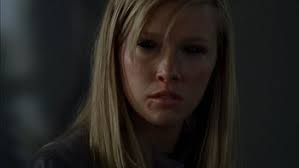

description

Les démons viennent de l'Enfer, mais étaient anciennement, pour la plupart, des humains. Un démon
est en général une âme humaine torturée et corrompue par le mal en Enfer.
Néanmoins il semble probable que certains démons n'aient jamais été humains, comme par exemple les
Shedims, dit "n'avoir jamais vu la lumière" et dont l'apparence physique diffère des autres démons
(reptilienne du peu qui a été montré). En ce sens les Shedims sont décrit d'une manière similaire à
celle des Léviathans, et Lucifer les craignant il est possible que ce dernier ne soit pas leur
créateur non plus.
Pouvoirs
Pouvoirs de faible niveau
- Possession démoniaque : Les démons peuvent prendre possession du corps de n'importe quel être humain vivant ou mort sans son consentement.
- Super force : Ils sont naturellement plus puissants que les être humains.
- Vol : Sous leurs formes désincarnées (nuage de fumée noire), ils peuvent voler dans les airs.
- Perception surnaturelle : Les démons ont des sens supérieurs à ceux des êtres humains et, en tant que damnés, ils sont tous capables de voir les chiens de l'Enfer.
Pouvoirs de niveau moyen
- Pacte démoniaque : Ils peuvent conclure des pactes pour offrir presque tous en échange de l'âme de celui qui conclut le pacte.
- Téléportation : Ils peuvent se déplacer instantanément d'un endroit à l'autre n'importe où sur Terre.
- Télékinésie : Ils peuvent déplacer des objet par la pensée.
Pouvoirs de haut niveau
- Maîtrise du feu
- Télékinésie avancé
- Photokinésie
Pouvoirs spéciaux
- Certains démons ont développé des capacités unique comme :
- Convocation : Samhain
- Châtiment démoniaque : Caïn
- Invisibilité : Daeva (créature)
- Transformation : Démon acheri
- régeneration ultra rapide : Abaddon
type de démon
Démons aux yeux noirs
- Les démons de seconde zone qui sont les plus nombreux, moins puissants. Ils sont donc plus faciles à tuer. Seule Abaddon est un démon du niveau supérieur aux yeux noirs.
Démons aux yeux rouges
- D'un grade un peu plus supérieur, ceux qu'ont appelle aussi Démons des croisements ils passent des pactes en échange d'une âme humaine que les Chiens de l'Enfer viennent récupérer après dix ans. Ils possèdent des yeux rouges. On les fait venir en plein milieu d'un croisement de route.
Démons aux yeux blancs
- Ce sont les démons du niveau supérieur, plus puissants, semblent aussi être capables de se téléporter. Au niveau hiérarchique, ils se situent juste après Lucifer, ils sont donc très importants et très puissants. Il existe deux démons connus de ce niveau :
- Alastair
- Lilith
- Samhain
Les Chevaliers de l'Enfer
- Ils sont très puissants et font partie des premiers démons. Ils sont presque invulnérables et sont immunisés contre la plupart des attaques basiques sur les démons tel que l'exorcisme et peuvent même résister au couteau censé tuer les démons. Le seul moyen de tuer un Chevalier de l'Enfer est la première lame. Les chevaliers de l'Enfer connus sont :
- Caïn
- Abaddon
- Dean